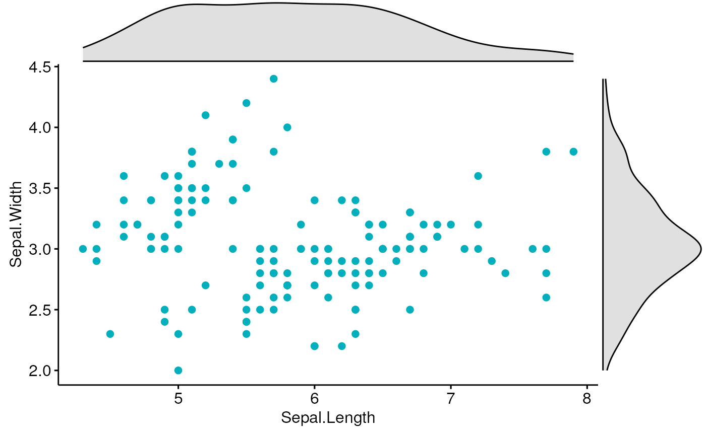
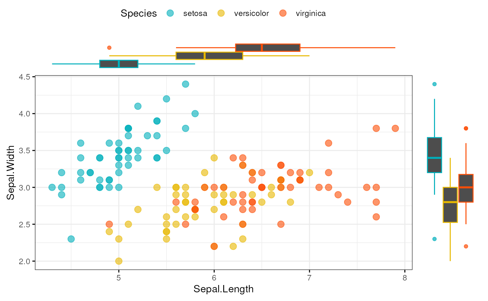

Scatter Plot with Marginal Histograms
ggscatterhist.RdCreate a scatter plot with marginal histograms, density plots or box plots.
ggscatterhist(data, x, y, group = NULL, color = "black", fill = NA, palette = NULL, shape = 19, size = 2, linetype = "solid", bins = 30, margin.plot = c("density", "histogram", "boxplot"), margin.params = list(), margin.ggtheme = theme_void(), margin.space = FALSE, main.plot.size = 2, margin.plot.size = 1, title = NULL, xlab = NULL, ylab = NULL, legend = "top", ggtheme = theme_pubr(), ...)
Arguments
| data | a data frame |
|---|---|
| x | x and y variables for drawing. |
| y | x and y variables for drawing. |
| group | a grouping variable. Change points color and shape by groups if
the options |
| color | point colors. |
| fill | point colors. |
| palette | the color palette to be used for coloring or filling by groups. Allowed values include "grey" for grey color palettes; brewer palettes e.g. "RdBu", "Blues", ...; or custom color palette e.g. c("blue", "red"); and scientific journal palettes from ggsci R package, e.g.: "npg", "aaas", "lancet", "jco", "ucscgb", "uchicago", "simpsons" and "rickandmorty". |
| shape | point shape. See |
| size | Numeric value (e.g.: size = 1). change the size of points and outlines. |
| linetype | line type ("solid", "dashed", ...) |
| bins | Number of histogram bins. Defaults to 30. Pick a better value that fit to your data. |
| margin.plot | the type of the marginal plot. Default is "hist". |
| margin.params | parameters to be applied to the marginal plots. |
| margin.ggtheme | the theme of the marginal plot. Default is |
| margin.space | logical value. If TRUE, adds space between the main plot and the marginal plot. |
| main.plot.size | the width of the main plot. Default is 2. |
| margin.plot.size | the width of the marginal plot. Default is 1. |
| title | plot main title. |
| xlab | character vector specifying x axis labels. Use xlab = FALSE to hide xlab. |
| ylab | character vector specifying y axis labels. Use ylab = FALSE to hide ylab. |
| legend | specify the legend position. Allowed values include: "top", "bottom", "left", "right". |
| ggtheme | the theme to be used for the scatter plot. Default is |
| ... | other arguments passed to the function |
Examples
# Basic scatter plot with marginal density plot ggscatterhist(iris, x = "Sepal.Length", y = "Sepal.Width", color = "#00AFBB", margin.params = list(fill = "lightgray"))# Grouped data ggscatterhist( iris, x = "Sepal.Length", y = "Sepal.Width", color = "Species", size = 3, alpha = 0.6, palette = c("#00AFBB", "#E7B800", "#FC4E07"), margin.params = list(fill = "Species", color = "black", size = 0.2) )# Use boxplot as marginal ggscatterhist( iris, x = "Sepal.Length", y = "Sepal.Width", color = "Species", size = 3, alpha = 0.6, palette = c("#00AFBB", "#E7B800", "#FC4E07"), margin.plot = "boxplot", ggtheme = theme_bw() )